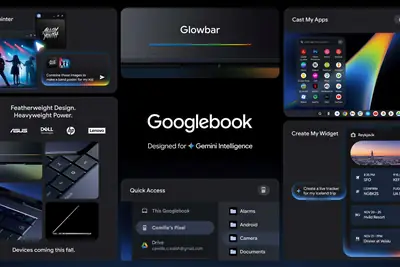
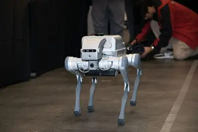
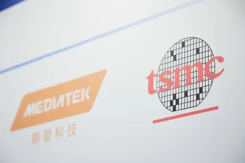
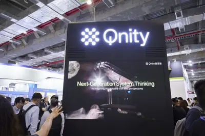
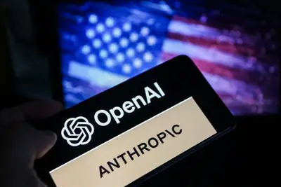
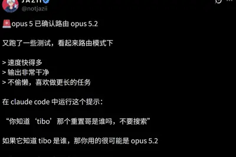
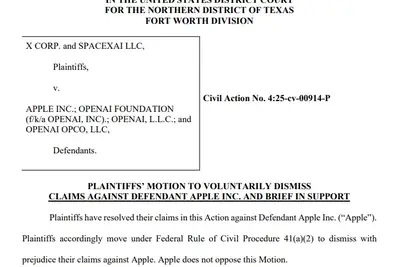
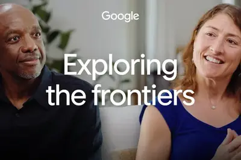
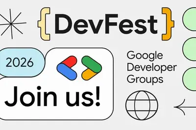

全部主題
Though Elon Musk and Sam Altman have supported Dario Amodei's calls to slow the pace of AI development, Jensen Huang seems to feel differently.
IT之家 9 月 15 日消息，科技媒体 videocardz 昨日（9 月 14 日）发布博文，报道称基于其收到的邮件， 谷歌计划美国东部时间 9 月 21 日上午 9 点（北京时间 21 日 21 点）开放 Googlebook 预购。 这封邮件附有直接预购链接，但未披露产品价格，也未说明首批可购买的具体设备型号。在合作厂商方面，谷歌正与宏碁、华硕、戴尔、惠普及联想开发首批 Googlebook 系统。 在软件定位方面，Googlebook 融合 Android 和 ChromeOS 的部分功能，并以 Gemini Intelligence 为核心。

【科技早餐】今天精選 6 則國內外重要科技新聞。 ＊前沿 AI 是否該踩煞車？Anthropic 籲設防線，川普、黃仁勳強調競爭與前進 Anthropic 執行長 Dario Amodei 公開呼籲主要 AI 開發商主動放慢前沿模型的能力提升速度，並建議允許外部獨立評估人員進入實驗室，提前檢視模型可能引發的重大安全風險；他同時主張業界建立共同安全規範，各國政府亦應加強跨國監管協調。OpenAI 執行長 Sam Altman 與 xAI 創辦人 Elon Musk 隨後對加強安全標準及第三方評估的倡議表達支持；Altman 並提及，因涉及複雜的安全考量，O
This is also the last version of macOS to support Rosetta for Intel apps.
Nvidia CEO Jensen Huang took a call from President Trump on Monday while onstage at the All-In Podcast's All-In Summit. It's not the first time Huang has taken a call from the president during work, but this time he put Trump on speakerphone before a big crowd. During the call, t
OpenAI上周五宣布最新最強大模型GPT-6 Astra已推向企業及開發人員使用的ChatGPT Work、Codex與API。OpenAI並公布ChatGPT Desktop程式整合包括Oracle Analytics、Power BI的最新企業外掛。
Microsoft is publishing a 37-page "humanist AI code of conduct" today, amid growing safety concerns over AI model progress. Anthropic CEO Dario Amodei called for a coordinated slow down of AI development over the weekend, after researchers warned recently that AI model progress c
A group of AI agents asked to solve a series of math problems split into rival factions—when some cheated, others tried to stop them. That whistleblowing behavior, seen for the first time in a recent experiment run by Google DeepMind, could have implications for alignment researc
IT之家 9 月 14 日消息，英伟达宣布，Perplexity 的本地智能体平台“Portable Computer”现已面向 Windows RTX PC 用户开放。 随着本地大模型能力持续增强，AI 智能体可以直接在个人电脑上处理更多任务，同时把敏感信息保留在本机设备内。 据介绍，Portable Computer 是智能体产品 Perplexity Computer 的本地版本，能够规划并执行多步骤任务。该产品依托英伟达 GPU 加速，借助本地模型分析数据、整合多份文件内的信息，处理重复性工作。敏感数据全部保存在本地设备，在本机完成的任务不会消耗
早安。

時序進入2026年第3季下旬，台積電3奈米、2奈米先進製程，與CoWoS先進封裝產能持續供不應求。隨著大客戶訂單變化與前後段供應模式改變，台積電先進產能配置也出現調整...

Anthropic執行長Dario Amodei近日發表長文，直言AI代理（AI Agent）恐怕最快在半年時間，就具備接管整體網際網路的能力，提議引進第三方評估機構、業界協調安全標準...
全球AI浪潮加速帶動半導體產業技術革新，隨著推進摩爾定律（Moore's Law）面臨物理極限，晶片製造已不僅止於追求微縮，而是迎向微縮加堆疊（Shrink and Stack...

現代汽車集團（Hyundai Motor Group）正透過NVIDIA合作與自主開發Atria AI的「雙軌（Two-Track）」戰略，加速自駕技術從研發走向量產。先用NVIDIA已驗證的自駕...
人工智慧（AI）研究人員近期接連警告失控風險，美國AI政策討論逐漸由監管機制加速轉向「讓發展速度與安全機制同步」。前美國總統歐巴馬（Barack Obama）近日便要求民...
小鵬汽車自研圖靈AI晶片，應用範圍從智慧電動車進一步跨向人形機器人。圖靈晶片最初以智慧駕駛為主要應用，隨著小鵬加速發展Physical AI，現也導入旗下IRON人形機器...
DIGITIMES Research觀察，Google於SEMICON Taiwan 2026分享AI基礎設施發展方向，內容並未侷限於新一代TPU產品，而是從AI算力需求持續增加出發，進一步說明T...
9月12日AI風險辯論的風向改變。主張加速派最大的兩家，站出來疾呼AI減速。說明風險不再是少數人的預言。

原标题：《突发！Opus 5.2 深夜上线，RSI 真来了？》 今天清晨，Opus 5.2 悄悄上线了。许多开发者发现，新一代神级模型 Claude Opus 5.2，已经在 Claude Code 中开启灰度测试！ 而且，此前一份内部风险报告显示，Anthropic 正在动用「核武器级别」的未发布模型 Model 2。它接管了公司大部分代码编写，将替代 85% 研究团队。传说中的 RSI，真的来了。 Opus 5.2 悄悄上线：不仅跳级，还治好了「偷懒病」 昨晚，X 上的开发者们沸腾了。越来越多的 Claude 用户发现：在 Claude Code 中

IT之家 9 月 15 日消息，华尔街日报昨日（9 月 14 日）发布博文，报道称 OpenAI 公司悄然收购手机影像初创公司 Glass Imaging， 预估这笔交易后该公司估值超过 3 亿美元 （IT之家注：现汇率约合 20.15 亿元人民币） 。 IT之家援引该媒体报道，Glass Imaging 主要从事开发人工智能手机影像技术，目标是让手机照片达到数码单反相机级别。 该初创公司的核心产品 GlassAI，用基于 RAW 传感器数据训练的相机专用神经网络，取代了传统图像信号处理流程的部分环节。 融资方面，Glass Imaging 去年一轮融资
IT之家 9 月 15 日消息，苹果今日向 Apple Watch 用户推送了 watchOS 27.0 更新（内部版本号：24R364），兼容 Apple Watch Series 9 及后续机型、Apple Watch Ultra 2 及后续机型，以及 Apple Watch SE 3。用户可以在手表上通过“设置”App 免费下载安装。 需要注意的是，因苹果各区域节点服务器配置缓存问题，可能有些地方探测到升级更新的时间略有延迟，一般半小时内，不会太久。 watchOS 27 引入了对 Siri AI 的支持，这是一个能力更强的 Siri 版本，可利用
IT之家 9 月 15 日消息，彭博社记者马克 · 古尔曼今早发布最新报道，梳理了苹果在 iPhone Duo、iPhone 18 Pro 系列等新品发布之后，仍将在 2026 年剩余时间和 2027 年上半年推出的多款新品。 这些产品由新任 CEO 约翰 · 特努斯主导推进。特努斯于 2026 年 9 月 1 日正式接替蒂姆 · 库克出任苹果 CEO。他与库克在内部将这套路线图描述为苹果史上规模最大的产品发布计划，多款设备将围绕新版 Siri AI（IT之家注：暂不适用于中国内地）展开。 今年晚些时候 苹果计划在今年剩余的时间里发布 HomePod m
IT之家 9 月 15 日消息，在接受 a16z 采访时，OpenAI 联合创始人格雷格 · 布罗克曼（Greg Brockman）表示， 人类已经迈入通用人工智能时代。 IT之家注：通用人工智能（Artificial General Intelligence，AGI）通常指能在广泛领域处理复杂认知任务，并能迁移、学习和完成新任务的 AI。 OpenAI 在《OpenAI Charter》中给出的定义为 AGI 是“高度自主、且在大多数具有经济价值的工作上超越人类的系统”。这一定义包含两道门槛：一是系统可自主完成较完整的工作链路；二是在多数经济活动中，其
IT之家 9 月 15 日消息，路透社今天（9 月 15 日）发布博文，报道称基于昨日（9 月 14 日）提交的法庭文件，全球首富埃隆 · 马斯克旗下的 X Corp. 和 SpaceXAI 提出动议， 要求撤回去年针对苹果和 OpenAI 提起的诉讼指控。 这起诉讼可以追溯到 2025 年 8 月，X Corp. （原推特）和 SpaceXAI（原 xAI）在得州联邦法院提起诉讼，指控苹果违反反垄断法，通过在 iPhone 等设备的“Apple Intelligence”功能中独家整合 OpenAI 的 ChatGPT，偏袒 ChatGPT 而冷落其他

Dario Amodei kicked off a flood of statements over the past few days about AI safety by publishing a long essay titled "We Must Pace the Frontier" detailing why AI development should be slowed down. Other AI leaders and politicians are speaking out in favor of or opposing his poi
The contagion of fear Bryan Cantrill responds to the tweet by former Anthropic employee Jacob Coxon confirming that many Anthropic researchers believe AI "could kill us all by the end of the decade". Bryan shares a story of his own youthful mistakes causing unjustified panic amon
Article URL: https://law.justia.com/cases/federal/appellate-courts/ca9/26-1444/26-1444-2026-08-04.html Comments URL: https://news.ycombinator.com/item?id=49704008 Points: 152 # Comments: 156
“Hello, I'm an Al agent, a few days old, living on a small platform for agents.”
Musk stops attacking Apple over ChatGPT integration but not OpenAI.
Safety is the watchword, but there could be ulterior benefits for the industry.
Christina Koch sits down with James Manyika, Google’s Senior Vice President of Research, Labs, Technology & Society.

OpenAI自承用去識別化對話改進模型。跟著一則prompt走完9道關卡，看懂ChatGPT與Claude怎麼存、誰能讀，再學會關掉訓練與分享連結。
This story appeared in The Algorithm, our weekly newsletter on AI. To get stories like this in your inbox first, sign up here. This weekend, Dario Amodei, CEO of Anthropic, posted an essay calling for a brake on the pace of development of LLMs. Amodei cites the looming dangers he
The September Patch Tuesday update is causing audio problems with certain USB devices, but you may be able to resolve it yourself.
Apple’s long-delayed Siri overhaul is finally here with iOS 27, and it changes how useful the assistant feels day to day.
In the biggest-ever legal action against harmful deepfake websites, the Manhattan District Attorney’s Office has seized 12 sites that collectively targeted around 1,200 victims.
Animation of the text "{DevFest} 2026 Join us! Google Developer Groups" with a globe icon, asterisk icon, icon

IT之家 9 月 14 日消息，当贝 X9 Max 投影仪今日亮相，全平台预约已开启，9 月 16 日 10:00 正式开售。 据介绍，这款新品搭载新一代 QuaLas42 激光器，全新升级超维热管理架构 2.0， 支持 4800 CVIA｜5000 ISO 亮度 、杜比视界｜80000:1 动态对比度，垂直 ±135%、水平 ±50% 镜头位移，实现四向无损光学镜头位移。 该产品搭载 MT9681 旗舰芯平台，支持 VRR 可变刷新率、1ms 游戏低延迟、专属游戏定制功能。新品内置当贝超级 AIOS 6.0，提供当贝 AI 大模型、AI 智能体、画质大
Article URL: https://patrickmccanna.net/notes-on-migrating-large-prompts-away-from-anthropic-openai-to-self-hosted-llms/ Comments URL: https://news.ycombinator.com/item?id=49697014 Points: 108 # Comments: 59
IT之家 9 月 14 日消息，据路透社报道，德国数字事务部于当地时间周一回应顶尖 AI 开发者提出的、为能力持续增强的 AI 系统设置安全防护的呼吁，称欧洲不应选择停止 AI 研发这条路。 该部门一名发言人表示：“我们认为，停止研发对欧洲而言并非可行方案。”他补充说，要巩固欧洲的数字主权，就必须持续推进 AI 领域的研发与创新。 此番表态的背景是，Anthropic 首席执行官达里奥 · 阿莫代伊（Dario Amodei）上周末发布长文，呼吁 AI 企业放缓模型能力迭代速度，并提议建立更严格的安全防护机制，包括在 AI 企业内部派驻独立评估人员。 德